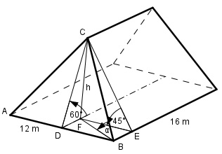
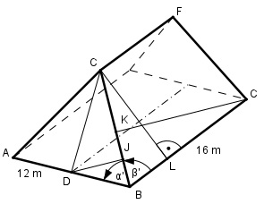
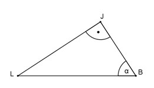
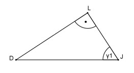
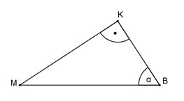
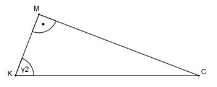

Aufgabe 193 Ein rechteckiges Walmdach hat eine Länge von 16 m und eine Breite von 12 m. Die dreieckige Dachfläche hat eine Neigung von 60°, die trapezförmige eine von 45°. Wie groß sind der Neigungswinkel α der schrägen Dachkanten und der Winkel β zwischen zwei aneinander stoßenden Dachflächen?

FE = 12 m/2 = 6 m Im Dreieck CFE: h tan 45° = ---- |*FE FE h = FE * tan 45° = 6 m * 1 = 6 m Im Dreieck DFC: h tan 60° = ---- | *DF DF DF * tan 60° = h | :tan 60° h 6 m DF = ---------- = ---------- = 3,5 m tan 60° 1,7321 h sin 60° = ---- | *DC DC DC * sin 60° = h | :sin 60° h 6 m DC = ---------- = --------- = 6,9 m sin 60° 0,866 Im Dreieck CDB: (rechter Winkel bei D) Satz von Pythagoras: BD = 12 m/2 = 6 m BC2 = BD2 + DC2 BC2 = 62 m2 + 6,92 m2 = 83,6 m2 |√ BC = 9,1 m Im Dreieck FBC: (rechter Winkel bei F) h 6 m sin α = ----- = ------- = 0,6593 --> α = 41,2° BC 9,1 m
Im Dreieck DBC: DB 6 m cos α’ = ---- = -------- = 0,6593 --> α’ = 48,8° BC 9,1 m Im Dreieck DBJ: (rechter Winkel bei J) DJ sin α’ = ---- | *DB DB DJ = DB * sin α’ = = 6 m * sin 48,8° = 6 m * 0,788 = 4,7 m BJ cos α’ = ----- | *DB DB BJ = DB * cos α’ = 6 m * cos 48,8° = = 6 m * 0,6587 = 3,95 m Schnitt durch BC:
LJ tan α = ---- |*BJ BJ LJ = BJ * tan α = = 3,95 m * tan 41,2° = 3,95 m * 0,8693 = 3,4 m Schnitt durch J senkrecht zu BC: γ1 ist der Winkel, den der Sparren BC mit der Dreiecksfläche bildet:
LJ 3,4 m cos γ1 = ---- = -------- = 0,7234 --> γ1 = 43,7° DJ 4,7 m Ähnliche Rechnung für die Trapezfläche: Im Dreieck BLC: BL = BE = DF = 3,5 m BL 3,5 m cos β’ = ---- = -------- = 0,3846 --> β’ = 67,4° BC 9,1 m Im Dreieck BCK: CK sin β’ = -------- | *16 m 16 m CK = 16 m * sin β’ = = 16 m * sin 67,4° = 16 m * 0,9232 = 14,8 m BK cos β’ = ------- |*16 m 16 m BK = 16 m * cos β’ = = 16 m * cos 67,4° = 16 m * 0,3843 = 6,1 m Schnitt durch BC:
KM tan α = ----- | *KB KB KM = KB * tan α = = 6,1 m * tan 41,2° = 6,1 m * 0,8693 = 5,3 m Schnitt durch J senkrecht zu BC: γ2 ist der Winkel, den der Sparren BC mit der Trapezfläche bildet:
KM 5,3 m cos γ2 = ---- = --------- = 0,3786 --> γ2 = 67,8° KC 14,8 m Die beiden Dachflächen bilden den Winkel β: β = γ1 + γ2 = 43,7° + 67,8° = 111,5°